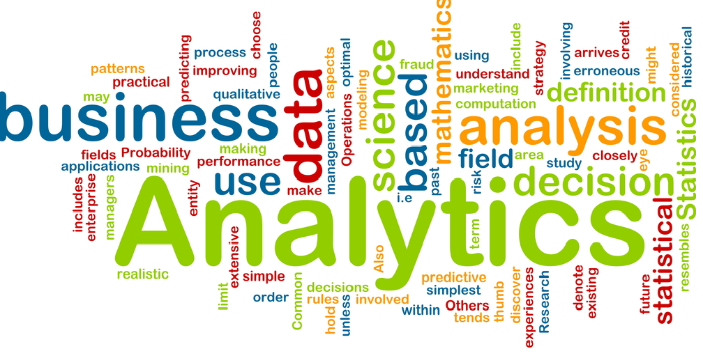

Why Business Analytics?
In today’s world, managerial decisions are increasingly based on data-driven models and analysis using statistical and optimization methods that have dramatically changed the way businesses operate in most domains including service operations, marketing, transportation, and finance.
Optimization methods and software to solve decision problems under uncertainty in business applications